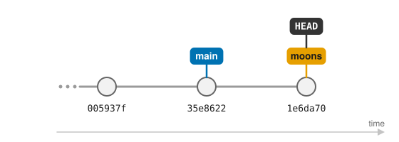
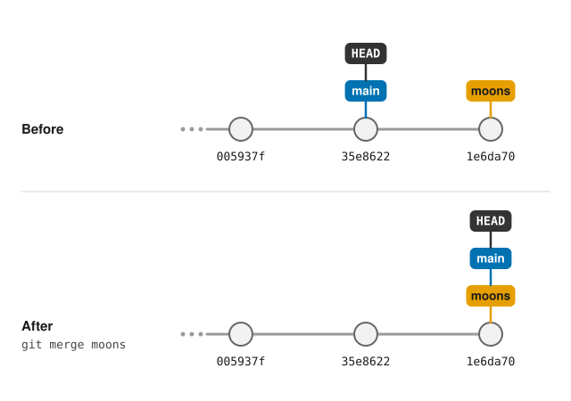
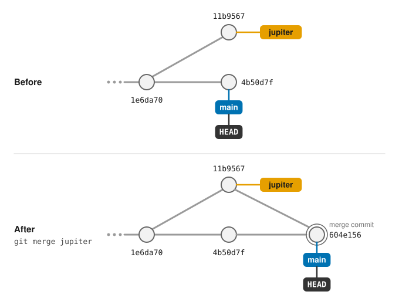

Branching and Merging
Learning Objectives
Explain what a branch is and why branches are useful.
Create, list and switch between branches.
Merge a branch back into
main.Tell the difference between a fast-forward merge and a merge commit.
Mark important versions with tags.
So far, all of Dracula’s commits have gone one after the other into a single line of history. That works well while there is only one thing going on at a time, but real work is rarely like that. Dracula might want to try out an idea without disturbing notes that he knows are correct, or to work on two unrelated topics at once and only keep the one that works out.
Git’s answer to this is branches. A branch is an independent line of development: you can make commits on it without affecting any other branch, switch back and forth between branches at any time, and later merge the work from one branch into another.
We have actually been using a branch all along. Every git status has started
with On branch main: main is simply the branch Git created for us when we
ran git init.
Listing and creating branches
git branch lists the branches in our repository:
$ git branch
* main
The * marks the branch we are currently on. Dracula wants to write some notes
about the two moons of Mars, but isn’t sure yet whether they are worth keeping,
so he starts a new branch called moons for them:
$ git switch -c moons
Switched to a new branch 'moons'
git switch moves us to another branch, and the -c option (for create)
creates that branch first. The new branch starts from the commit we were on,
so for now moons and main contain exactly the same work:
$ git branch
main
* moons
Working on a branch
Commits work exactly as before. Let’s create a new file and commit it:
$ nano moons.txt
$ cat moons.txt
Phobos and Deimos are too small to live on, but could be useful for mining
$ git add moons.txt
$ git commit -m "Add notes on the moons of Mars"
[moons 1e6da70] Add notes on the moons of Mars
1 file changed, 1 insertion(+)
create mode 100644 moons.txt
Notice that Git now tells us which branch the commit was made on. The
--graph and --all options of git log show us all branches at once:
$ git log --oneline --graph --all
* 1e6da70 (HEAD -> moons) Add notes on the moons of Mars
* 35e8622 (main) Add the ignore file
* 005937f Discuss concerns about Mars' climate for Mummy
* 34961b1 Add concerns about effects of Mars' moons on Wolfman
* f22b25e Start notes on Mars as a base
(Your commit identifiers will be different, and your history may contain some extra commits from the exercises.)
The labels in brackets show where each branch currently points: moons is one
commit ahead of main, and HEAD -> moons tells us that moons is the branch
we are on. This is really all a branch is: a label pointing at a commit,
which moves forward every time we commit on that branch.

Now let’s go back to main:
$ git switch main
$ ls
Switched to branch 'main'
mars.txt
moons.txt has disappeared! It hasn’t been lost: it only exists on the moons
branch, and when we switch branches Git updates the files in our working
directory to match the branch we switch to. If we ran git switch moons again,
it would come back. (If you still have the dummy files a.dat, b.dat,
c.dat and the results directory from the lesson on ignoring things, ls
lists them too: Git ignores them, so they stay where they are when you switch
branches.)
Switch with a clean working directory
Before switching branches, commit (or discard) any changes you are working on.
Git will refuse to switch if that would overwrite changes you haven’t
committed, and uncommitted changes that don’t clash with anything are carried
over to the other branch, which can be confusing. Running git status before
git switch is a good habit.
Not ready to commit? Put your changes aside with git stash
Sometimes you are halfway through a change when you need to switch branch, and the work isn’t ready to be committed yet. If the other branch has its own version of a file you have changed, switching would overwrite your changes, so Git refuses:
$ git switch experiment
error: Your local changes to the following files would be overwritten by checkout:
mars.txt
Please commit your changes or stash them before you switch branches.
Aborting
As the message suggests, git stash puts your uncommitted changes aside, leaving
you with a clean working directory:
$ git stash
Saved working directory and index state WIP on main: 35e8622 Add the ignore file
$ git status
On branch main
nothing to commit, working tree clean
You can now switch to the other branch, do what you need to do there, and come
back. git stash list shows what you have put aside, and git stash pop brings
the most recent changes back (and removes them from the stash):
$ git switch main
$ git stash pop
On branch main
Changes not staged for commit:
(use "git add <file>..." to update what will be committed)
(use "git restore <file>..." to discard changes in working directory)
modified: mars.txt
no changes added to commit (use "git add" and/or "git commit -a")
Dropped refs/stash@{0} (eda7444b23f062e7df3b9509cd4e67e29e52ff4a)
The stash is meant for short interruptions: it is easy to forget what you have put there, so for anything longer, commit your work on a branch instead.
Merging a branch
Dracula is happy with his notes on the moons, so he wants to bring them into
main. From the branch that should receive the work (here, main), we run
git merge with the name of the branch to merge in:
$ git merge moons
Updating 35e8622..1e6da70
Fast-forward
moons.txt | 1 +
1 file changed, 1 insertion(+)
create mode 100644 moons.txt
$ git log --oneline --graph --all
* 1e6da70 (HEAD -> main, moons) Add notes on the moons of Mars
* 35e8622 Add the ignore file
* 005937f Discuss concerns about Mars' climate for Mummy
* 34961b1 Add concerns about effects of Mars' moons on Wolfman
* f22b25e Start notes on Mars as a base
Git calls this a fast-forward merge: nothing had happened on main since
moons was created, so all Git had to do was move the main label forward to
the same commit as moons. No new commit was needed.

The animation below replays the whole story so far: creating the branch,
committing on it, switching back to main and merging with a fast-forward.
Watch how the commits stay where they are, while the main and moons labels,
and HEAD, move between them:

The moons branch has done its job, so we can delete it. This only removes the
label; the commits are safely part of main now:
$ git branch -d moons
Deleted branch moons (was 1e6da70).
When both branches have moved on
Fast-forwards are the simple case. More often, work continues on main while
a branch is being worked on. Let’s start a new branch for some notes on Jupiter:
$ git switch -c jupiter
$ nano jupiter.txt
$ cat jupiter.txt
Too much radiation, but Europa might be worth a visit
$ git add jupiter.txt
$ git commit -m "Start notes on Jupiter"
Meanwhile, Dracula goes back to main and adds a line to mars.txt:
$ git switch main
$ nano mars.txt
$ cat mars.txt
Cold and dry, but everything is my favorite color
The two moons may be a problem for Wolfman
But the Mummy will appreciate the lack of humidity
Dust storms can last for months
$ git add mars.txt
$ git commit -m "Warn about dust storms on Mars"
Now the history has split in two: each branch has a commit that the other does not have.
$ git log --oneline --graph --all
* 4b50d7f (HEAD -> main) Warn about dust storms on Mars
| * 11b9567 (jupiter) Start notes on Jupiter
|/
* 1e6da70 Add notes on the moons of Mars
* 35e8622 Add the ignore file
...
A fast-forward is no longer possible, because main can’t simply be moved to
where jupiter is without losing the dust storm commit. When we merge, Git
combines the two lines of work by creating a new merge commit with two
parents:
$ git merge jupiter
Git opens our editor with a suggested message, Merge branch 'jupiter', which
we can just save and close. Git then reports:
Merge made by the 'ort' strategy.
jupiter.txt | 1 +
1 file changed, 1 insertion(+)
create mode 100644 jupiter.txt
$ git log --oneline --graph --all
* 604e156 (HEAD -> main) Merge branch 'jupiter'
|\
| * 11b9567 (jupiter) Start notes on Jupiter
* | 4b50d7f Warn about dust storms on Mars
|/
* 1e6da70 Add notes on the moons of Mars
* 35e8622 Add the ignore file
...

The graph shows the two lines of work coming back together. main now contains
both the dust storm warning and jupiter.txt, so we can delete the branch:
$ git branch -d jupiter
Deleted branch jupiter (was 11b9567).